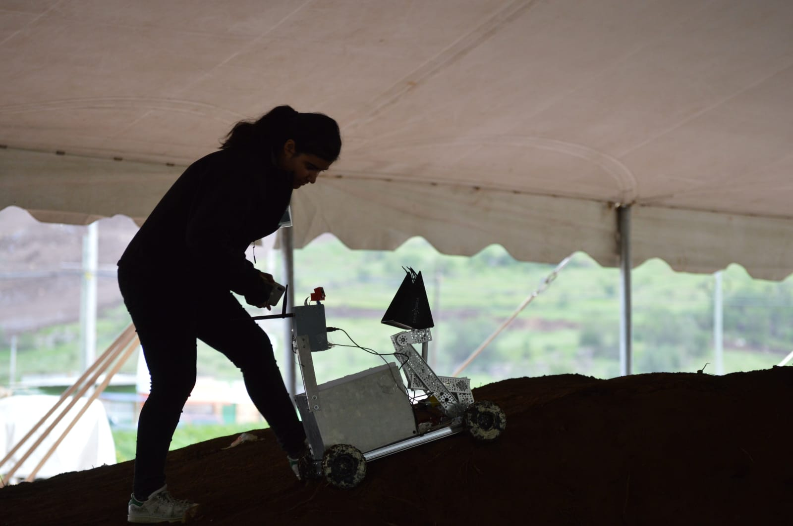

Emasofía Carolina García Zamora (Mexicali, 13 de mayo del 2000) es una joven recién egresada de ingeniería aeroespacial, en 2021 inicio su difusión en redes con el pseudónimo This Is Nerdy, en sus redes suele publicar su día a día en su labor de ingeniera, así como explicar temas relacionados al área, recomendar libros con relación al tema, difundir a otros influencers que se dedican a la Ciencia, Ingeniería y Tecnología, y brindar consejos a otras chicas y chicos de Latinoamérica que buscan enfocarse en el área aeroespacial. Actualmente es miembro del comité organizador del International Astronautical Congress 2022 (IAC 2022), sin embargo, su objetivo es llegar a ser Controladora de Misiones Espaciales en alguna agencia espacial.
| Emasofía Carolina García Zamora | |
|---|---|
| Información Personal | |
| Nombre completo | Emasofía Carolina García Zamora |
| Pseudónimo | This is Nerdy |
| Edad | 22 años |
| Nacimiento | 13 de mayo del 2000 Baja California (México) |
| Nacionalidad | Mexicana |
| Puesto actual | Miembro del comité organizador del International Astronautical Congress 2022 |
| Afiliaciones | |
| • Universidad Autónoma de Baja California
• International Astronautical Congress • Tripoli International Rocketry Association • Club de Investigación Universitario de Desarrollo en Sistemas Espaciales • Women of Aeronautics and Astronautics • Spaceport America Cup • Encuentro Mexicano de Ingeniería en Cohetería Experimental |
| Contenido |
|---|
Emasofía nació un 13 de mayo del año 2000 en Mexicali, Baja California en México, desde los 12 años, ella amaba el espacio, sin embargo, fue que también descubrió lo difícil que sería para una chica mexicana el llegar a la NASA, pero con ello encontró una figura de inspiración a seguir, la ingeniera aeroespacial Dorothy Ruíz Martínez. A los 14 años, veía canales de televisión de ciencia y siguió en todo momento el programa espacial cuando John Glenn robito la Tierra, fue cuando supo que quería enfocarse en Control de Misión, con el objetivo de mantener a salvo a los astronautas resolviendo sus problemas desde la Tierra, por lo que decidió enfocarse en ser ingeniera aeroespacial. Durante su último año de estudios de secundaria, tuvo la oportunidad de asistir a un curso del CanSat, donde aprendió principalmente a tener el coraje y la confianza para participar y seguir adelante. Una vez aprendida los conocimientos necesarios y la lección, decidió iniciar el proyecto de construcción y lanzamiento de CanSat’s, ya que se dio cuenta que era un excelente inicio para lograr adquirir experiencia práctica de un proyecto espacial.
En 2018, decidió iniciar la carrera en ingeniería aeroespacial en la Universidad Autónoma de Baja California, principalmente luego de escuchar todo lo que realizaba su primo, quien también estudio dicha carrera y le conto de los temas que veían y los proyectos que realizaba. Una vez dentro, decidió inscribirse a todos los cursos y concursos relacionados al CanSat y asistió a conferencias relacionadas al tema espacial. Logro asistir a un viaje científico de verano a NASA Ames, siendo la primer estudiante de primer año que había logrado asistir a un programa que normalmente esta para estudiantes de tercer año, y donde conoció a una mexicana que también trabajaba en la NASA, Ali Guarneros Luna.
Posteriormente, decidió ingresar al mundo de los rovers, para ello decidió investigar sobre ellos en el Jet Propulsion Laboratory de la NASA para posteriormente participar en una competencia nacional de rovers, donde su equipo y ella se coronaron como campeones del segundo lugar, logrando presentar su rover en la International Space Development Conference (ISDC).
Se enfocó en la cohetería, donde asistió a talleres, cursos, congresos, certificaciones y clases relacionadas al tema, así como investigaciones. Cuando tuvo que poner a prueba el conocimiento adquirido, luego de varios intentos, logro realizar la certificación L1 de cohetería de Tripoli International Rocketry Association convirtiéndose así en la primera mujer mexicana en ser certificada por la United States High Power Rocket Association, posteriormente realizo la certificación L2, pero gracias a su ambición, Emasofía, junto a su equipo, se postularon a la competencia más grande de cohetes de potencia a nivel mundial, el Spaceport America Cup 2020 siendo su equipo el primero y único calificado, en este proyecto ella fue Líder de Sistemas de Pruebas y Recuperación.
Durante la pandemia, tuvo un tiempo donde su ánimo cayo, sin embargo, logro contactar a Dorothy Ruíz quien le siguió alentando a seguir su objetivo y manteniendo sesiones con ella. Fue cuando descubrió que había pocas mujeres en el área aeroespacial. Por lo que busco grupos de apoyo internacional a mujeres ingenieras, fue ahí donde conoció el Women of Aeronautics and Astronautics (WoAA), donde comparte sus experiencias con otras mujeres, orienta y aconseja a las niñas en esta red de apoyo. Con esta nueva mentalidad, decidió crear un club en México con sus compañeros, conocido como Club de Investigación Universitario de Desarrollo en Sistemas Espaciales, dirigido por estudiantes para estudiantes donde su objetivo es inspirar y fomentar el interés de los estudiantes en temas espaciales y tecnológicos, y proporcionar experiencias en trabajo colaborativo e innovación proyectos para el crecimiento profesional a nivel nacional y mundial. La primera competencia participo este club como equipo fue Encuentro Mexicano de Ingeniería en Cohetería Experimental 2021 (ENMICE), un evento nacional de competencia de cohetes experimentales, donde Emasofía era líder del proyecto y fue que se posiciono en primer lugar en la competencia nacional.
Al buscar aprender el idioma (ruso), por accidente, inicio en un proceso de clasificación para un programa de verano en Rusia. Aunque en un principio, tenía sus preocupaciones, fue calificada dentro de las 30 plazas para poder ir a la nación rusa, consiguiendo tener mayor experiencia en uno de los países que están a la vanguardia de la industria aeroespacial en el International Summer Space School en Samara, Rusia.
|
• Fundadora del Club de Investigación Universitario de Desarrollo en Sistemas Espaciales (CIUDSE) • Líder en el Spaceport America CUP de: o -Payload • Líder del Chapter México y Baja California de las WoAA (Women of Astronautics and aeronautics) • Líder de mecanismos espaciales robóticos del HUBL (competencia nacional de rovers) |
|
• Es amante de las películas, principalmente de Ciencia Ficción, Documentales, Comedia y Animadas. Su película favorita es Megamente • Suele hacer cortometrajes, normalmente relacionados a conciencia social • Le gusta la lectura, en especial biografías de controladoras de misiones espaciales o de personal femenino de NASA • Sus libros favoritos son: o El Club de la Salamandra de Jaime Alfonso Sandoval • Le gusta saltar en trampolines • Odia a los mosquitos • Le teme a las catarinas y a los despegues de avión • Contrario a lo que muchos piensan, inicio su difusión en redes sociales a partir del 2021 • Le gusta armar rompecabezas y construir cosas de madera • Su videojuego favorito es el Super Mario Bros de Wii • Su comida favorita es el macaron con queso, mientras que sus menos preferidas son las alcachofas, bernejenas y mariscos • Habla cuatro idiomas: Español, Inglés, Ruso y Alemán • Admira a varias personas, principalmente a: • Su objetivo principal es llegar a ser Controladora de Misión Espacial en el Centro Espacial Lyndon B. Johnson |